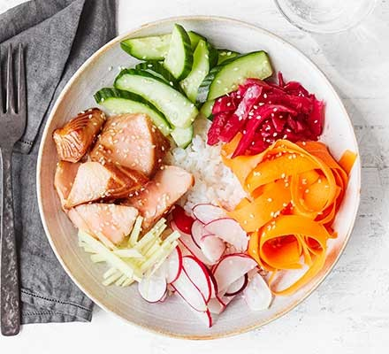

Sushi Bowl

Description
This easy to make Sushi Bowl contains a tasty mix of salmon, sushi rice, carrot, radish and pickled red cabbage
Ingredients
- 150g sushi rice
- 1 pinch sugar
- 1 tbsp rice vinegar
- 2 cooked salmon filets
- 1 large carrot, cut into ribbons
- 4 tbsp pickled red cabbage
- handful radishes, sliced
- thumb-sized piece of ginger, finely sliced
- 1/4 cucumber, halved longway and sliced
- 1 tbsp soy sauce
- 1 tbsp sesame seeds(optional)
Directions
- Cook the sushi rice following pack instructions. When cooked, sprinkle over the sugar and vinegar, cover and set aside for 5 mins.
- Divide the rice between two bowls and arrange the other ingredients on top, then drizzle with the soy sauce and sesame seeds.
Return